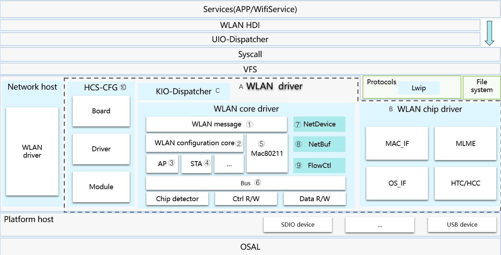
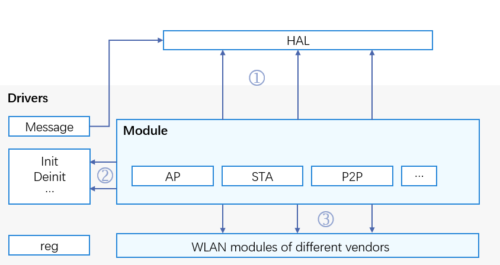

WLAN Overview¶
Introduction¶
The WLAN module is developed based on the OpenHarmony Driver Foundation. It supports cross-OS migration, component adaptation, and modular assembly and compilation. Based on the unified APIs provided by the WLAN module, driver developers of WLAN vendors can adapt their driver code and developers of the hardware abstraction layer (HAL) are capable of creating, disabling, scanning, and connecting to WLAN hotspots. The following figure shows the framework of the WLAN module:
Figure 1 WLAN framework

WLAN Driver API Architecture¶
The WLAN module provides the following three types of APIs:
APIs for HAL developers
APIs that can be called directly by driver developers
APIs for driver developers of different vendors to implement
This document provides guidelines on how to initialize a WLAN module.
Figure 2 Available APIs of the WLAN module

Available APIs¶
The WLAN driver module provides APIs for HAL developers, such as creating, disabling, scanning, connecting to or disconnecting from WLAN hotpots.
The WLAN driver module provides APIs that can be directly called by driver developers, such as creating/releasing a WifiModule, connecting to/disconnecting from a WLAN hotspot, applying for/releasing a network data buffer, and converting between the pbuf structure of Lightweight TCP/IP Stack (lwIP) and a network data buffer.
Table 1 describes some APIs.
Table 1 APIs that can be directly called by driver developers
File | Function | Description |
|---|---|---|
wifi_module.h | struct WifiModule WifiModuleCreate(const struct HdfConfigWifiModuleConfigconfig); | Creates a WifiModule. |
void WifiModuleDelete(struct WifiModule *module); | Deletes and releases data of a WifiModule. | |
int32_t DelFeature(struct WifiModule *module, uint16_t featureType); | Deletes a feature from a WifiModule. | |
int32_t AddFeature(struct WifiModule module, uint16_t featureType, struct WifiFeaturefeatureData); | Adds a feature to a WifiModule. | |
wifi_mac80211_ops.h | int32_t (startAp)(NetDevicenetDev); | Starts an AP. |
int32_t (stopAp)(NetDevicenetDev); | Stops an AP. | |
int32_t (connect)(NetDevicenetDev, WifiConnectParams *param); | Starts a connection. | |
int32_t (disconnect)(NetDevicenetDev, uint16_t reasonCode); | Cancels a connection. | |
hdf_netbuf.h | static inline void NetBufQueueInit(struct NetBufQueue *q); | Initializes a network data buffer queue. |
struct NetBuf *NetBufAlloc(uint32_t size); | Applies for a network data buffer. | |
void NetBufFree(struct NetBuf *nb); | Releases a network data buffer. | |
struct NetBuf Pbuf2NetBuf(const struct NetDevicenetdev, struct pbuf *lwipBuf); | Converts the pbuf structure of lwIP to a network data buffer. | |
struct pbuf NetBuf2Pbuf(const struct NetBufnb); | Converts a network data buffer to the pbuf structure of lwIP. |
The WLAN driver module provides APIs for driver developers to implement capabilities, such as initializing/deregistering, opening/stopping a network device, and obtaining the state of a network device.
Table 2 describes some APIs.
Table 2 APIs for driver developers of WLAN vendors to implement
File | Function | Description |
|---|---|---|
net_device.h | int32_t (init)(struct NetDevicenetDev); | Initializes a network device. |
struct NetDevStats (getStats)(struct NetDevice *netDev); | Obtains the state of a network device. | |
int32_t (setMacAddr)(struct NetDevicenetDev, void *addr); | Sets the MAC address. | |
void (deInit)(struct NetDevicenetDev); | Deinitializes a network device. | |
int32_t (open)(struct NetDevicenetDev); | Opens a network device. | |
int32_t (stop)(struct NetDevicenetDev); | Stops a network device. |